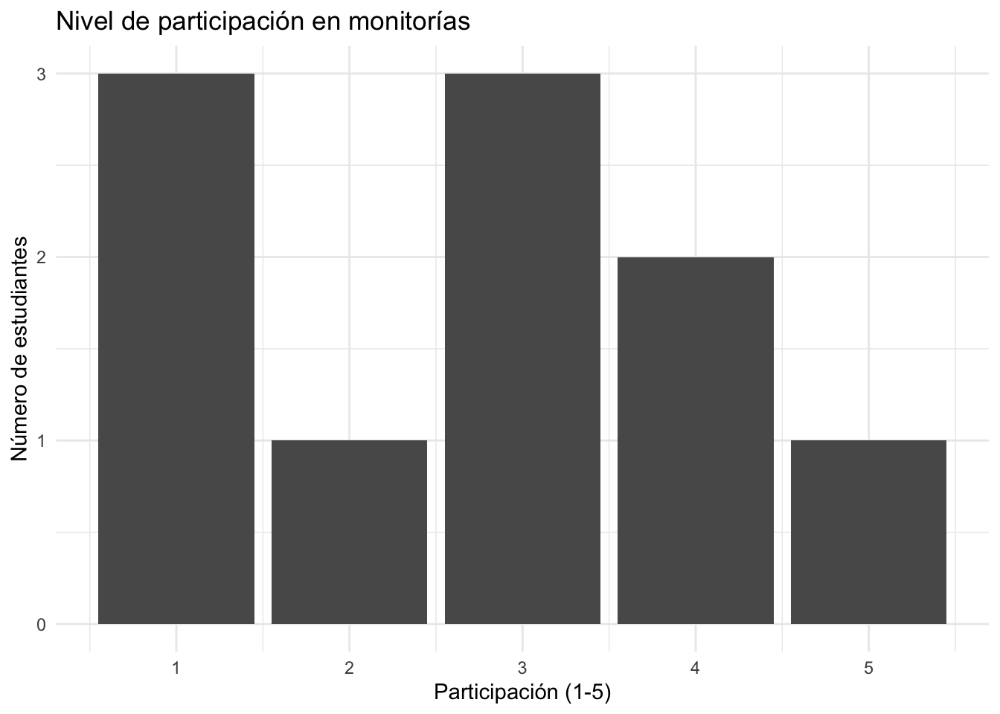

#> Actor Cambio_esperado
#> 1 Estudiantes Participan activamente en monitorías y mejoran hábitos de estudio
#> 2 Monitores Desarrollan habilidades pedagógicas y acompañan efectivamente
#> 3 Profesores Integran monitorías en su estrategia de enseñanza18 Outcome Mapping (OM)
18.1 A. Teoría y explicación
18.1.1 ¿Qué es Outcome Mapping?
El Outcome Mapping (OM) es una metodología de planificación, monitoreo y evaluación que se centra en los cambios en el comportamiento, las relaciones, las acciones y las prácticas de los actores clave involucrados en una intervención. A diferencia de los enfoques tradicionales que buscan medir impactos finales (como ingresos, puntajes o indicadores agregados), el OM pone el foco en los procesos de cambio que ocurren en los llamados boundary partners, es decir, aquellos actores con los que el programa interactúa directamente y sobre los cuales puede influir de manera más inmediata.
Este enfoque reconoce que, en contextos complejos, los resultados de largo plazo no dependen únicamente de una intervención, sino de la interacción entre múltiples actores y factores. Por ello, en lugar de atribuir cambios finales directamente al programa, el Outcome Mapping propone analizar cómo el programa contribuye a transformaciones observables en el comportamiento de los actores, entendiendo estos cambios como pasos intermedios hacia impactos más amplios (Earl et al. (2001)).
Uno de los aportes centrales del OM es que redefine el concepto de “resultado” (outcome): no como un estado final, sino como un cambio en el comportamiento de actores clave dentro del sistema. Esto permite capturar dinámicas que suelen quedar invisibles en evaluaciones tradicionales, como procesos de aprendizaje, fortalecimiento de capacidades, coordinación entre actores o cambios en normas sociales. Como señalan Earl et al. (2001), el OM es especialmente útil en intervenciones orientadas al cambio social, la gobernanza o el desarrollo institucional, donde los efectos son no lineales y difíciles de atribuir de manera directa.
Además, el Outcome Mapping introduce herramientas específicas como los outcome challenges (definición del cambio esperado en los actores) y los progress markers (indicadores cualitativos y graduales del cambio), que permiten hacer seguimiento sistemático a estos procesos. Este enfoque ha sido ampliamente utilizado por organizaciones de desarrollo internacional para complementar evaluaciones de impacto más tradicionales, aportando una mejor comprensión de cómo y por qué ocurren los cambios (Earl et al. (2001); Jones y Hearn (2009)).
18.1.2 ¿Para qué sirve en evaluación?
El Outcome Mapping (OM) es especialmente útil en evaluación cuando el objetivo no es solo medir resultados finales, sino comprender cómo ocurren los cambios dentro de un sistema, particularmente a través del comportamiento de los actores. Este enfoque es más adecuado en contextos donde los procesos son complejos, los resultados son no lineales y múltiples factores influyen en los resultados observados. En estos casos, medir únicamente el impacto final puede ser insuficiente para entender el verdadero aporte de una intervención (Earl et al. (2001); Jones y Hearn (2009)).
En términos de cuándo usar OM, resulta particularmente valioso en programas donde el cambio depende de la interacción entre actores, como intervenciones en educación, salud pública, fortalecimiento institucional o gobernanza. También es útil cuando los resultados esperados implican transformaciones en prácticas, capacidades, relaciones o normas sociales, más que cambios inmediatos en indicadores cuantificables. Por ejemplo, en programas de formación docente o participación comunitaria, el éxito del programa depende de cómo los actores adoptan nuevas formas de actuar, más que de un resultado puntual observable en el corto plazo (Earl et al. (2001)).
En cuanto a los tipos de programas donde es más pertinente, el OM es particularmente adecuado para intervenciones orientadas al cambio social, el desarrollo de capacidades, la incidencia en políticas públicas o la articulación entre múltiples actores. En estos contextos, los efectos suelen ser indirectos, emergentes y difíciles de atribuir a una sola causa. Por ello, el OM permite capturar mejor estas dinámicas al enfocarse en los cambios intermedios que hacen posible el impacto final (Jones y Hearn (2009)).
Además, el Outcome Mapping responde a un conjunto de preguntas evaluativas clave que suelen quedar fuera de los enfoques tradicionales, tales como:
- ¿Cómo están cambiando los comportamientos de los actores clave?
- ¿Qué relaciones se están fortaleciendo o debilitando dentro del sistema?
- ¿Qué prácticas nuevas están emergiendo como resultado del programa?
- ¿A través de qué mecanismos se están generando los cambios?
En este sentido, el OM complementa de manera natural herramientas como el Participatory Systems Mapping (PSM). Mientras el PSM permite entender la estructura del sistema —identificando variables, relaciones causales y bucles de retroalimentación—, el Outcome Mapping se enfoca en cómo cambian los actores dentro de ese sistema. Es decir, el PSM ayuda a responder qué importa y cómo se conecta, mientras que el OM permite profundizar en quién cambia y de qué manera. Juntos, ambos enfoques ofrecen una visión más completa para el diseño y la evaluación de intervenciones en contextos complejos (Earl et al. (2001); Jones y Hearn (2009)).
18.1.3 ¿Cómo se usa en evaluación de impacto?
El Outcome Mapping (OM) se utiliza en evaluación de impacto como una herramienta complementaria a los métodos cuantitativos, especialmente cuando queremos ir más allá de estimar si un programa funciona y entender cómo y por qué produce cambios. Mientras los métodos cuantitativos (como experimentos, DiD o IV) permiten identificar efectos causales, el OM aporta una comprensión más profunda de los procesos que conectan la intervención con los resultados, lo que resulta clave en contextos complejos (Earl et al. (2001); Jones y Hearn (2009)).
En primer lugar, el OM permite la identificación de cambios intermedios que suelen quedar invisibles en evaluaciones tradicionales. En lugar de centrarse únicamente en resultados finales (por ejemplo, puntajes o ingresos), el enfoque pone atención en transformaciones graduales en los actores, como mejoras en capacidades, cambios en prácticas o fortalecimiento de relaciones. Estos cambios intermedios —capturados a través de herramientas como los progress markers— permiten construir una narrativa más completa del impacto y entender las rutas causales que lo explican (Earl et al. (2001)).
En segundo lugar, el Outcome Mapping facilita el seguimiento sistemático de actores clave (boundary partners), que son quienes implementan, adaptan o amplifican los efectos del programa. A través de este enfoque, la evaluación no solo observa resultados agregados, sino que monitorea cómo evolucionan los comportamientos de estos actores a lo largo del tiempo. Esto es particularmente útil en intervenciones donde el éxito depende de procesos de adopción, aprendizaje o coordinación entre múltiples actores (Jones y Hearn (2009)).
Además, el OM permite traducir elementos cualitativos en insumos útiles para el análisis cuantitativo. Por ejemplo:
- Los cambios identificados en los actores pueden convertirse en variables observables o indicadores.
- Los progress markers pueden operacionalizarse como métricas de seguimiento.
- Las relaciones identificadas pueden formularse como hipótesis que luego se contrastan con datos.
En este sentido, el OM actúa como un puente entre el análisis cualitativo y cuantitativo, fortaleciendo el diseño de la evaluación y mejorando la interpretación de resultados.
Finalmente, al conectarlo con herramientas como el Participatory Systems Mapping (PSM), el uso del OM se vuelve aún más potente. Mientras el PSM ayuda a identificar las variables y relaciones clave del sistema, el Outcome Mapping permite hacer seguimiento a cómo cambian los actores dentro de ese sistema. Esta combinación permite diseñar evaluaciones más completas, donde no solo se mide el impacto, sino que también se entienden los mecanismos que lo generan (Earl et al. (2001); Jones y Hearn (2009)).
NotaConceptos clave
Boundary partners: Actores clave con los que el programa interactúa directamente y en quienes busca influir. No son controlados por la intervención, pero sí pueden cambiar su comportamiento como resultado de ella.
Outcome challenges: Descripción clara del cambio esperado en los boundary partners, es decir, cómo deberían actuar, relacionarse o tomar decisiones si el programa es exitoso.
Progress markers: Indicadores cualitativos y graduales que permiten hacer seguimiento al cambio en los actores. Se organizan en niveles (lo que se espera ver, lo que sería positivo ver y lo que sería ideal ver).
Estrategias: Acciones o intervenciones que implementa el programa para generar los cambios en los boundary partners, incluyendo actividades de capacitación, acompañamiento o incentivos.
18.2 B. Aplicación paso a paso
18.2.1 Ejemplo aplicado: Programa de monitorias
Vamos a aplicar Outcome Mapping al programa de monitorías académicas, cuyo objetivo es mejorar el rendimiento de los estudiantes.
18.2.2 Paso 1: Definir la visión del programa
La visión describe el cambio de largo plazo que se espera lograr.
NotaVisión
Estudiantes con mejores resultados académicos, mayor autonomía en su aprendizaje y una comunidad académica colaborativa
18.2.3 Paso 2: Identificar boundary partners
Son los actores sobre los cuales el programa puede influir directamente.
- Estudiantes que reciben monitoría
- Monitores
- Profesores
18.2.4 Paso 3: Definir outcome challenges
Se describe cómo deberían cambiar los actores si el programa funciona bien.
18.2.5 Paso 4: Construir progress markers
Indicadores graduales del cambio.
#> Actor Nivel Comportamiento
#> 1 Estudiantes Esperar ver Asisten regularmente a monitorías
#> 2 Estudiantes Sería bueno ver Participan activamente en sesiones
#> 3 Estudiantes Ideal ver Ayudan a otros estudiantes18.2.6 Paso 5: Diseñar estrategias
Acciones que el programa implementa para generar los cambios.
#> Estrategia Objetivo
#> 1 Capacitación a monitores Mejorar calidad del acompañamiento
#> 2 Sesiones semanales de monitoría Aumentar participación estudiantil
#> 3 Seguimiento académico Detectar estudiantes en riesgo
#> 4 Coordinación con profesores Alinear monitorías con cursos18.2.7 Paso 6: Sistema de seguimiento
Construimos una base simple para monitorear cambios en los actores.
#> estudiante asistencia participacion ayuda_otros
#> 1 1 0 4 0
#> 2 2 0 1 0
#> 3 3 0 2 0
#> 4 4 1 3 1
#> 5 5 0 5 1
#> 6 6 1 3 0
#> 7 7 1 3 1
#> 8 8 1 1 0
#> 9 9 0 4 1
#> 10 10 0 1 018.3 Visualización

NotaImportante
El sistema de seguimiento en Outcome Mapping permite monitorear cambios en el comportamiento de los actores, no estimar causalidad. Sin embargo, estos datos pueden complementar evaluaciones cuantitativas posteriores.
18.4 C. ¿Cómo se usa en evaluación?
Una vez construido el Outcome Mapping, el siguiente paso es traducir sus elementos en componentes operativos de la evaluación. El valor del OM no está solo en describir el cambio, sino en convertir esa información en indicadores, datos y estrategias de análisis.
Podemos hacer tres conversiones clave:
1. De cambios → indicadores
Los cambios en comportamiento definidos en los outcome challenges se pueden traducir en indicadores observables. Esto implica pasar de descripciones cualitativas a variables que puedan medirse en la práctica.
Por ejemplo, si el cambio esperado es que los estudiantes “participen activamente en monitorías”, esto puede convertirse en indicadores como:
- Número de sesiones asistidas
- Nivel de participación en clase
- Frecuencia de intervención en actividades
De esta manera, el OM ayuda a definir qué medir y a asegurar que los indicadores estén alineados con los mecanismos del programa.
2. De actores → unidades de análisis
Los boundary partners permiten definir claramente quiénes son las unidades de análisis en la evaluación. En lugar de centrarse únicamente en resultados agregados, el enfoque pone atención en los actores que experimentan el cambio.
Por ejemplo:
- Estudiantes → unidad de análisis individual
- Monitores → unidad de análisis individual o grupal
- Profesores → unidad de análisis a nivel de curso
Esto es clave porque permite diseñar mejor la recolección de datos y elegir métodos adecuados (encuestas, paneles, datos administrativos).
3. De progress markers → métricas
Los progress markers ofrecen una forma natural de construir métricas graduales del cambio. A diferencia de los indicadores tradicionales (que suelen ser binarios o puntuales), estos permiten capturar niveles de avance.
Por ejemplo:
- Esperar ver → asistencia a monitorías
- Sería bueno ver → participación activa
- Ideal ver → apoyo a otros estudiantes
Estos niveles pueden convertirse en:
- Escalas ordinales (bajo, medio, alto)
- Índices de comportamiento
- Variables acumulativas de progreso
Esto permite analizar no solo si ocurrió el cambio, sino en qué medida y con qué intensidad.
NotaImportante
El Outcome Mapping no reemplaza la evaluación cuantitativa, pero la fortalece:
- Mejora la definición de indicadores
- Clarifica las unidades de análisis
- Permite medir procesos de cambio, no solo resultados finales
Esto facilita la integración con métodos econométricos y mejora la interpretación de los resultados.
18.5 D. Limitaciones y riesgos
Aunque el Outcome Mapping (OM) es una herramienta poderosa para comprender procesos de cambio, también presenta limitaciones importantes que deben tenerse en cuenta al momento de diseñar y utilizar una evaluación.
1. No permite identificar efectos causales por sí solo
Una de las principales limitaciones del OM es que no está diseñado para estimar impactos causales. A diferencia de métodos como experimentos, Diferencias en Diferencias o Variables Instrumentales, el OM no permite aislar el efecto de una intervención frente a otros factores. Su enfoque está en la contribución al cambio, no en la atribución causal. Por lo tanto, si se utiliza de manera aislada, no es posible responder preguntas como “¿cuánto del cambio observado se debe al programa?”
2. Dependencia de percepciones y subjetividad
El OM se basa en gran medida en la identificación de cambios en comportamiento a partir de la observación, el seguimiento o la percepción de los actores. Esto introduce un riesgo de subjetividad, ya que los resultados pueden depender de cómo los participantes interpretan o reportan los cambios.
Además, los progress markers pueden variar según quién los defina, lo que puede afectar la comparabilidad y consistencia de los resultados (Jones y Hearn (2009)).
3. Dificultad para priorizar y simplificar
En contextos complejos, el Outcome Mapping puede generar una gran cantidad de información sobre actores, cambios y procesos. Esto puede llevar a mapas o sistemas de seguimiento demasiado amplios, dificultando la priorización de qué medir o analizar.
Si no se gestiona adecuadamente, existe el riesgo de que la evaluación pierda foco y se vuelva operativamente costosa (Earl et al. (2001)).
4. Requiere tiempo y capacidades institucionales
Implementar OM de manera adecuada implica procesos de reflexión, construcción participativa y seguimiento continuo. En particular,
- Tiempo
- Capacidades técnicas
- Coordinación entre actores
En contextos con recursos limitados, puede ser difícil sostener estos procesos en el tiempo (Earl et al. (2001); Jones y Hearn (2009)).
5. Riesgo de desconexión con métodos cuantitativos
Si no se diseña de manera articulada, el Outcome Mapping puede quedar como un ejercicio cualitativo aislado, sin conexión con el análisis cuantitativo. Esto limita su utilidad en evaluaciones de impacto que requieren evidencia más robusta.
Por ello, es clave integrar OM con otras herramientas (como PSM o métodos econométricos), de modo que los cambios identificados puedan traducirse en indicadores medibles y contrastables.
NotaImportante
El Outcome Mapping no reemplaza la evaluación de impacto. Su valor está en complementar otros métodos, ayudando a entender cómo ocurren los cambios, no necesariamente cuánto impacto generan.
18.6 E. Conclusiones y recomendaciones
El Outcome Mapping (OM) aporta una perspectiva clave para la evaluación de impacto al desplazar el foco desde los resultados finales hacia los procesos de cambio en los actores. En contextos donde los programas operan a través de múltiples mecanismos y dependen de la interacción entre distintos actores, entender estos procesos no es opcional, sino necesario para interpretar adecuadamente los resultados.
A lo largo de esta guía, se mostró que el OM permite identificar cómo cambian los comportamientos, las prácticas y las relaciones, ofreciendo una visión más rica de la intervención. Sin embargo, su mayor valor emerge cuando se utiliza de manera articulada con otros enfoques. En particular:
- El Participatory Systems Mapping (PSM) ayuda a entender la estructura del sistema, las variables clave y sus interacciones.
- El Outcome Mapping permite hacer seguimiento a los cambios en los actores dentro de ese sistema.
- Los métodos cuantitativos permiten estimar el efecto causal de la intervención.
Esta complementariedad es fundamental en evaluaciones de impacto en contextos reales, donde los problemas no son lineales y las intervenciones no actúan en condiciones controladas.
Recomendaciones prácticas
A partir de lo anterior, se proponen algunas recomendaciones para el uso del Outcome Mapping en evaluación:
1. Usar OM desde el diseño del programa El Outcome Mapping es más útil cuando se incorpora desde etapas tempranas, ya que permite estructurar la teoría de cambio, identificar actores clave y definir indicadores relevantes desde el inicio.
2. Priorizar actores y cambios clave No todos los actores ni todos los cambios pueden ser monitoreados. Es importante seleccionar aquellos más relevantes para la lógica del programa y donde existe mayor incertidumbre.
3. Traducir los resultados a indicadores medibles Para integrar el OM con otros enfoques, es fundamental convertir los progress markers y cambios observados en variables que puedan medirse y analizarse.
4. Integrar con métodos cuantitativos El OM debe utilizarse como complemento, no como sustituto. Idealmente, los cambios identificados deben alimentar el diseño de evaluaciones cuantitativas que permitan contrastar hipótesis y estimar efectos.
5. Mantener un equilibrio entre profundidad y simplicidad Aunque el OM permite capturar la complejidad, es importante evitar sistemas de seguimiento demasiado extensos. Un diseño claro y focalizado mejora la utilidad de la evaluación.
NotaIdea final
Evaluar impacto no es solo medir resultados, sino entender procesos. El Outcome Mapping permite cerrar esa brecha, conectando lo que los programas hacen con cómo generan cambio en la realidad.